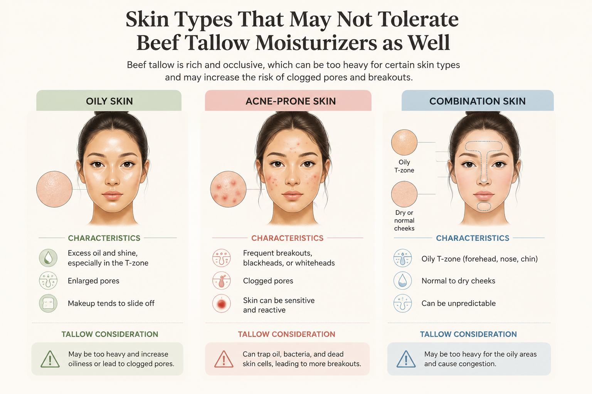

If TikTok is to be believed, beef tallow is the all-natural secret to glass skin, acne-free complexions, and reversing aging. Some creators even claim it’s better than luxury moisturizers because it’s “what our ancestors used.”
The reality is much less dramatic.
Beef tallow can absolutely moisturize dry skin. But there’s very little evidence showing it outperforms modern moisturizers—and for many people, it may actually increase the risk of clogged pores and breakouts. Dermatologists generally agree that it’s an interesting traditional ingredient, but not the revolutionary skincare breakthrough social media makes it out to be.
What Is Beef Tallow?
Beef tallow is purified fat that’s been rendered from cows, usually from the fatty tissue surrounding the kidneys (known as suet). Once rendered, it becomes a smooth, shelf-stable balm that’s rich in fatty acids.
Unlike water-based creams, beef tallow contains no water. Instead, it’s almost entirely made of lipids (fats), which means it works by creating a protective layer over the skin to reduce moisture loss.
Many tallow skincare brands market it as:
- “Biocompatible” with human skin
- Rich in vitamins A, D, E, and K
- Free of preservatives
- A natural alternative to conventional moisturizers
- Safe for sensitive skin
While some of these claims contain a grain of truth, they often leave out important context.
Why It Feels So Moisturizing
The reason people often love beef tallow at first is simple: it’s an excellent occlusive.
Occlusive ingredients don’t actually add hydration—they help prevent the water already in your skin from evaporating.
Tallow contains fatty acids like:
- Oleic acid
- Stearic acid
- Palmitic acid
These lipids soften the skin and reinforce the skin barrier, making very dry skin feel smoother and less flaky. That’s a legitimate benefit and one dermatologists generally agree on.
If your skin feels instantly softer after applying beef tallow, that’s completely expected.
But Moisturized Doesn’t Mean Better Skin
Here’s where social media often exaggerates.
Many viral videos claim beef tallow:
- Builds collagen
- Eliminates wrinkles
- Treats acne
- Heals eczema
- Reverses skin damage
Unfortunately, there’s very little clinical research supporting these claims.
While beef tallow does contain tiny amounts of fat-soluble vitamins—including vitamin A—the concentration is nowhere near what’s found in proven skincare ingredients like retinol or prescription retinoids. There is currently no evidence showing beef tallow stimulates collagen production or performs like anti-aging ingredients that have been extensively studied.
The Biggest Downside: It Can Clog Pores
One of the biggest concerns dermatologists have is that beef tallow is a very rich, heavy moisturizer.
If you have:
- oily skin
- acne-prone skin
- combination skin
there’s a decent chance it may be too occlusive.

Heavy oils can trap excess sebum and dead skin cells, increasing the likelihood of blackheads, whiteheads, and acne in susceptible individuals. While not everyone will break out, people with acne-prone skin should approach tallow cautiously.
“Natural” Doesn’t Automatically Mean Better
One reason beef tallow became so popular is because it’s marketed as “chemical-free.”
But this creates a false comparison.
Everything—including beef fat—is made of chemicals.
Modern moisturizers often contain ingredients like:
- Ceramides
- Glycerin
- Squalane
- Petrolatum
- Hyaluronic acid
These ingredients have decades of safety testing and clinical research showing they improve skin hydration and barrier function.
Beef tallow simply hasn’t been studied to the same degree. That doesn’t mean it’s harmful—it means we don’t have strong evidence proving it’s superior.
What About the Vitamins?
Many brands highlight that beef tallow naturally contains vitamins A, D, E, and K.
That’s technically true.
However, dermatologists point out that the amounts are relatively small, and we don’t have good evidence showing these vitamins are absorbed through the skin in meaningful amounts from tallow itself.
Compare that with ingredients like stabilized retinol or vitamin C serums, which have extensive research demonstrating measurable skin benefits.
In other words, simply containing vitamins doesn’t automatically make a skincare ingredient effective.
Is It Safe?
For most healthy adults, a commercially made beef tallow moisturizer is unlikely to be dangerous.
However, there are a few potential concerns:
- Homemade or poorly preserved products may have inconsistent quality.
- Added essential oils or fragrances can cause irritation.
- It may spoil faster than traditional creams if not properly formulated.
- It isn’t ideal for everyone, especially those with acne or very oily skin.
Who Might Actually Like It?
Beef tallow may work well if you have:
- Very dry skin
- A compromised skin barrier
- Skin that tolerates rich ointments and balms
It may be less suitable if you have:
- Acne-prone skin
- Oily skin
- Frequent clogged pores
- Rosacea that’s easily aggravated by heavy products
As with any new skincare product, patch testing before applying it all over your face is a good idea.
The Bottom Line
Beef tallow moisturizers are best viewed as a simple moisturizer—not a miracle treatment.
They can help reduce moisture loss and leave dry skin feeling soft because they’re rich in skin-conditioning fats. But the bold claims about boosting collagen, curing acne, reversing wrinkles, or outperforming dermatologist-developed moisturizers aren’t supported by strong scientific evidence.
If your skin loves beef tallow, there’s no reason you can’t enjoy using it. But if you’re hoping for clinically proven anti-aging, acne-fighting, or skin-repairing benefits, ingredients like ceramides, glycerin, retinoids, and sunscreen have a much stronger body of research behind them.
Truth Behind Beauty Verdict: ⚠️ Partly True
Beef tallow is a perfectly reasonable moisturizer for some people—but it’s not the skincare miracle social media often claims it is. It works as an occlusive that softens very dry skin, and that benefit is real. The collagen-building, acne-curing, wrinkle-reversing claims are not supported by evidence, and the richness that helps dry skin is the same thing that can clog pores if you’re acne-prone.